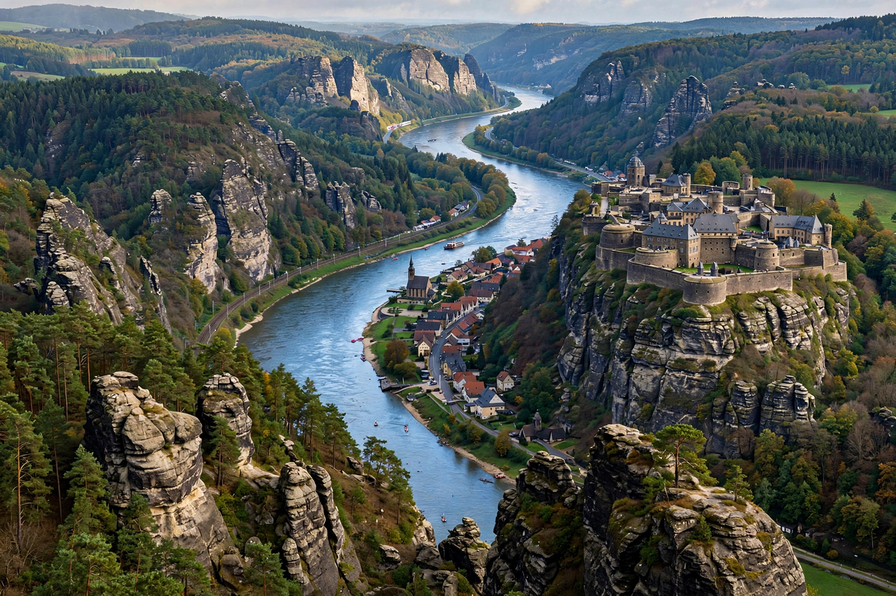

| Elbe | |
|---|---|
| Native name | Labe (Czech); Elbe (German) |
| Source | Giant Mountains, Czech Republic |
| Mouth | North Sea at Cuxhaven, Germany |
| Length | 1,094 km (680 mi) |
| Basin size | 148,268 km² |
| Major cities | Prague (via Vltava), Dresden, Magdeburg, Hamburg |

The Elbe (Czech: Labe) is one of the major rivers of Central Europe. It rises in the Giant Mountains of the northern Czech Republic before traversing much of Bohemia (western half of the Czech Republic), then Germany and flowing into the North Sea at Cuxhaven, 110 kilometres northwest of Hamburg. Its total length is 1,094 kilometres.
Rising at an elevation of about 1,400 metres in the Giant Mountains, the Elbe descends through Bohemia, receiving the Vltava (Moldau) at Mělník north of Prague. It then crosses the border into Saxony, passing Dresden and Meißen, cuts through the sandstone hills of Saxon Switzerland, and continues northwest across the North German Plain past Magdeburg, Wittenberg and Hamburg before reaching its estuary at Cuxhaven.
The Elbe has long formed a cultural and political boundary in Central Europe. In April–May 1945, American and Soviet forces met on the Elbe near Torgau — celebrated as Elbe Day — marking a decisive step toward the end of the Second World War in Europe. During the Cold War, stretches of the river formed part of the inner German border.